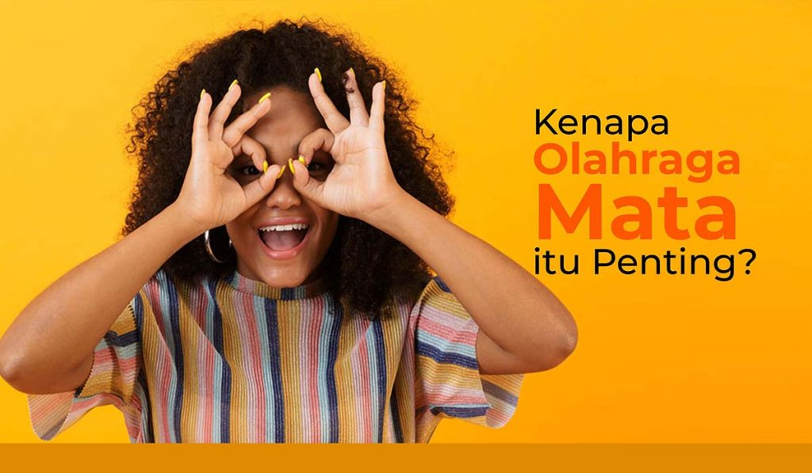
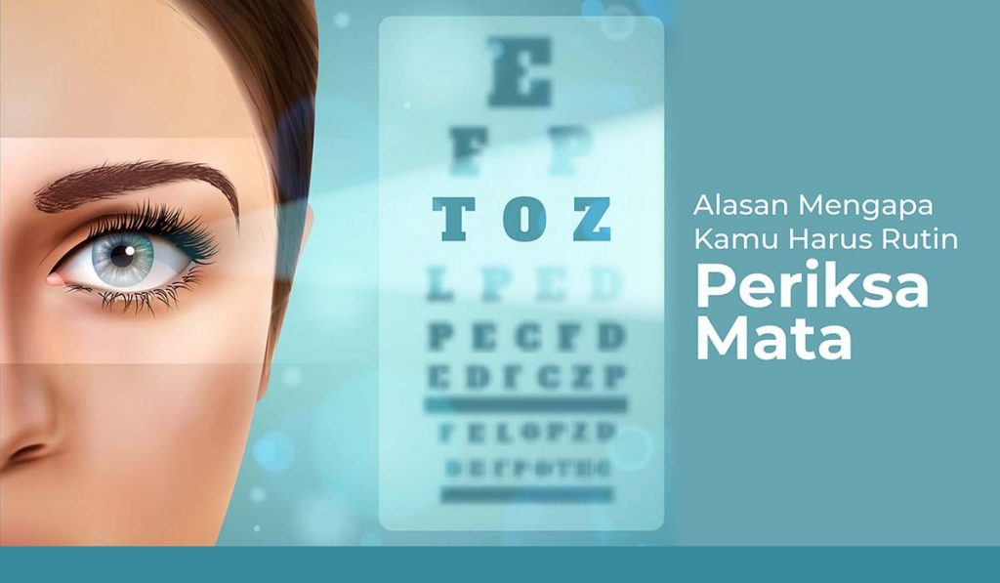
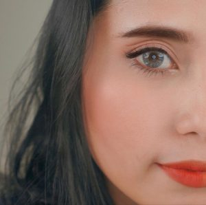

Good Quality
Kualitas produksi yang SANGAT BAIK, dengan metode pembuatan Sandwich System, serta sudah terdaftar di KEMENKES RI. X2 Soft Cosmetic Lens di design khusus untuk mata wanita Indonesia dengan pattern dan koleksi warna yang keren dan terbanyak di Indonesia.
Is Everywhere
Kenyamanan X2 Soft Cosmetic Lens sangat teruji. Didukung Authorized Dealers yang tersebar di seluruh Indonesia, produk X2 dapat diperoleh dengan mudah.

Kenapa Olahraga Mata itu Penting?
Buat kamu yang sering menghabiskan banyak waktu di depan komputer atau gadget, sangat penting, loh, untuk memperhatikan dan menjaga kesehatan

Alasan Mengapa Kamu Perlu Rutin Periksa Mata
Salah satu pemeriksaan kesehatan yang penting dilakukan secara berkala adalah periksa mata. Semakin tua usia seseorang, kesehatan mata dan fungsi penglihatan rentan
Read More
Kenali Penyebab Mata Gatal dan Cara Mengatasinya
Hampir setiap orang pernah merasakan mata gatal. Lalu, apa sebenarnya penyebab mata gatal? Mata gatal sering kali menimbulkan ketidaknyamanan, apalagi
Kenapa Olahraga Mata itu Penting?
Buat kamu yang sering menghabiskan banyak waktu di depan komputer atau gadget, sangat penting, loh, untuk memperhatikan dan menjaga kesehatan
Alasan Mengapa Kamu Perlu Rutin Periksa Mata
Salah satu pemeriksaan kesehatan yang penting dilakukan secara berkala adalah periksa mata. Semakin tua usia seseorang, kesehatan mata dan fungsi penglihatan rentan
Read More

Kenali Penyebab Mata Gatal dan Cara Mengatasinya
Hampir setiap orang pernah merasakan mata gatal. Lalu, apa sebenarnya penyebab mata gatal? Mata gatal sering kali menimbulkan ketidaknyamanan, apalagi